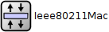
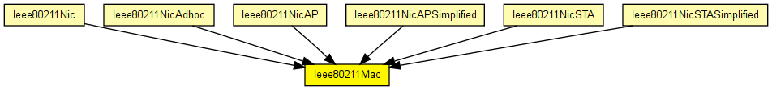
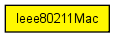

Implementation of the 802.11b MAC protocol. This module is intended to be used in combination with the Ieee80211Radio module as the physical layer. (The SnrEval80211 and Decider80211 modules should also work if per-packet bitrate setting gets implemented.)
Encapsulation/decapsulation must be done in the upper layers. (It is typically in the 802.11 management module, see in Ieee80211Nic). The base class for 802.11 frame messages is Ieee80211Frame, but this module expects Ieee80211DataOrMgmtFrame (a subclass) from upper layers (the management module). This module will assign the transmitter address (address 2) and the frame sequence number/fragment number fields in the frames; all other fields must already be filled when this module gets the frame for transmission.
The module has an internal queue, but usually it is to be used with an external passive queue module (its name should be given in the queueModule parameter; specifying "" causes the internal queue to be used). The passive queue module is a simple module whose C++ class implements the IPassiveQueue interface.
Limitations
The following features not supported: 1) fragmentation, 2) power management, 3) polling (PCF). Physical layer algorithms such as frequency hopping and direct sequence spread spectrum are not modelled directly.
Fields related to the above unsupported features are omitted from management frame formats as well (for example, FH/DS/CF parameter sets, beacon/probe timestamp which is related to physical layer synchronization, listen interval which is related to power management, capability information which is related to PCF and other non-modelled features).
The following diagram shows usage relationships between types. Unresolved types are missing from the diagram. Click here to see the full picture.
The following diagram shows inheritance relationships for this type. Unresolved types are missing from the diagram. Click here to see the full picture.
If a module type shows up more than once, that means it has been defined in more than one NED file.
| Ieee80211Nic (compound module) |
This NIC implements an 802.11 network interface card. It can be configured via the mgmtType parameter to act as an AP or a STA, or for ad-hoc mode. |
| Ieee80211NicAdhoc (compound module) |
This NIC implements an 802.11 network interface card in ad-hoc mode. |
| Ieee80211NicAP (compound module) |
This NIC implements an 802.11 network interface card, in an AP, using infrastructure mode. |
| Ieee80211NicAPSimplified (compound module) |
This NIC implements an infrastructure mode 802.11 network interface card for a wireless Access Point (AP), but using a simplified mgmt module that does not support handovers. |
| Ieee80211NicSTA (compound module) |
This NIC implements an 802.11 network interface card, in a STA, using infrastructure mode. |
| Ieee80211NicSTASimplified (compound module) |
This NIC implements an infrastructure mode 802.11 network interface card for a host (STA), but using a simplified mgmt module that does not support handovers. |
| Name | Type | Default value | Description |
|---|---|---|---|
| address | string | "auto" |
MAC address as hex string (12 hex digits), or "auto". "auto" values will be replaced by a generated MAC address in init stage 0. |
| queueModule | string | "" |
name of optional external queue module |
| maxQueueSize | int |
max queue length in frames; only used if queueModule=="" |
|
| bitrate | double | ||
| rtsThresholdBytes | int | 2346B |
longer messages will be sent using RTS/CTS |
| retryLimit | int | -1 |
maximum number of retries per message, -1 means default |
| cwMinData | int | -1 |
contention window for normal data frames, -1 means default |
| cwMinBroadcast | int | -1 |
contention window for broadcast messages, -1 means default |
| mtu | int | 1500 |
| Name | Value | Description |
|---|---|---|
| display | i=block/layer |
| Name | Direction | Size | Description |
|---|---|---|---|
| uppergateIn | input | ||
| uppergateOut | output | ||
| lowergateIn | input | ||
| lowergateOut | output |
// // Implementation of the 802.11b MAC protocol. This module is intended // to be used in combination with the Ieee80211Radio module as the physical // layer. (The SnrEval80211 and Decider80211 modules should also work if // per-packet bitrate setting gets implemented.) // // Encapsulation/decapsulation must be done in the upper layers. (It is // typically in the 802.11 management module, see in Ieee80211Nic). // The base class for 802.11 frame messages is Ieee80211Frame, but this // module expects Ieee80211DataOrMgmtFrame (a subclass) from upper layers // (the management module). This module will assign the transmitter address // (address 2) and the frame sequence number/fragment number fields in the // frames; all other fields must already be filled when this module gets // the frame for transmission. // // The module has an internal queue, but usually it is to be used with an // external passive queue module (its name should be given in the queueModule // parameter; specifying "" causes the internal queue to be used). The passive // queue module is a simple module whose C++ class implements the IPassiveQueue // interface. // // <b>Limitations</b> // // The following features not supported: 1) fragmentation, 2) power management, // 3) polling (PCF). Physical layer algorithms such as frequency hopping and // direct sequence spread spectrum are not modelled directly. // // Fields related to the above unsupported features are omitted from // management frame formats as well (for example, FH/DS/CF parameter sets, // beacon/probe timestamp which is related to physical layer synchronization, // listen interval which is related to power management, capability information // which is related to PCF and other non-modelled features). // simple Ieee80211Mac { parameters: string address = default("auto"); // MAC address as hex string (12 hex digits), or // "auto". "auto" values will be replaced by // a generated MAC address in init stage 0. string queueModule = default(""); // name of optional external queue module int maxQueueSize; // max queue length in frames; only used if queueModule=="" double bitrate @unit("bps"); int rtsThresholdBytes @unit("B") = default(2346B); // longer messages will be sent using RTS/CTS int retryLimit = default(-1); // maximum number of retries per message, -1 means default int cwMinData = default(-1); // contention window for normal data frames, -1 means default int cwMinBroadcast = default(-1); // contention window for broadcast messages, -1 means default int mtu = default(1500); @display("i=block/layer"); gates: input uppergateIn @labels(Ieee80211Frame); output uppergateOut @labels(Ieee80211Frame); input lowergateIn @labels(Ieee80211Frame); output lowergateOut @labels(Ieee80211Frame); }